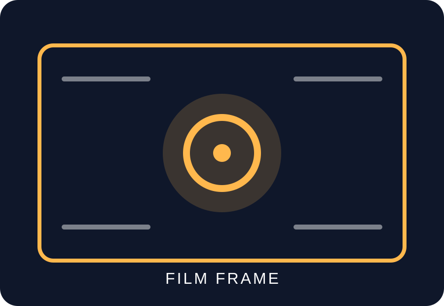

Reels & Shorts
Fast, vertical edits designed around rhythm, hooks, captions and clear calls to action.
9:16Social
Mobile filmmaking studio
FrameLab is a student-built concept studio for short films, reels, music visuals and social-first video. The landing page introduces our service, workflow and visual direction.

What we make
From a first idea to a final export.
Fast, vertical edits designed around rhythm, hooks, captions and clear calls to action.
Performance shots, atmosphere and movement combined into a compact visual narrative.
Short scripted scenes with deliberate framing, blocking, light and sound choices.
Why FrameLab
Create a responsive multi-page studio website that demonstrates advanced CSS layout while giving visitors clear information about mobile filmmaking services.